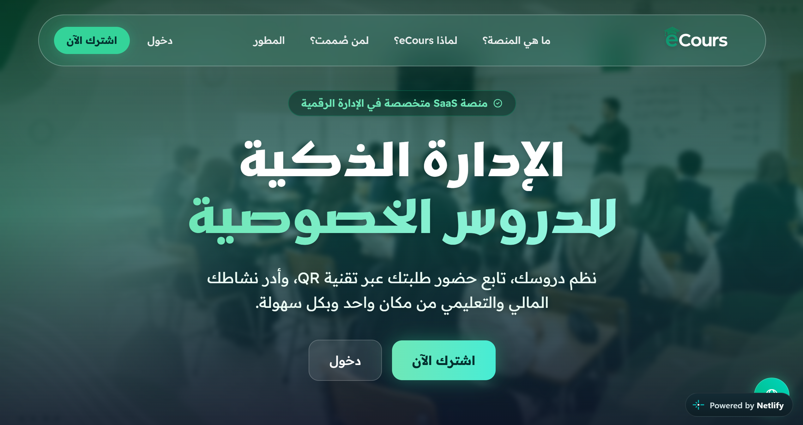
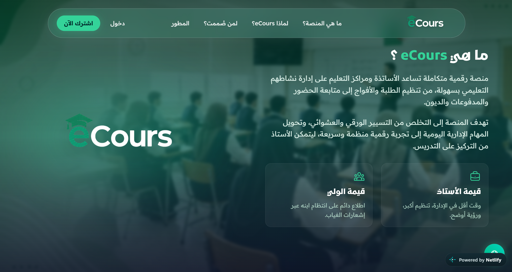
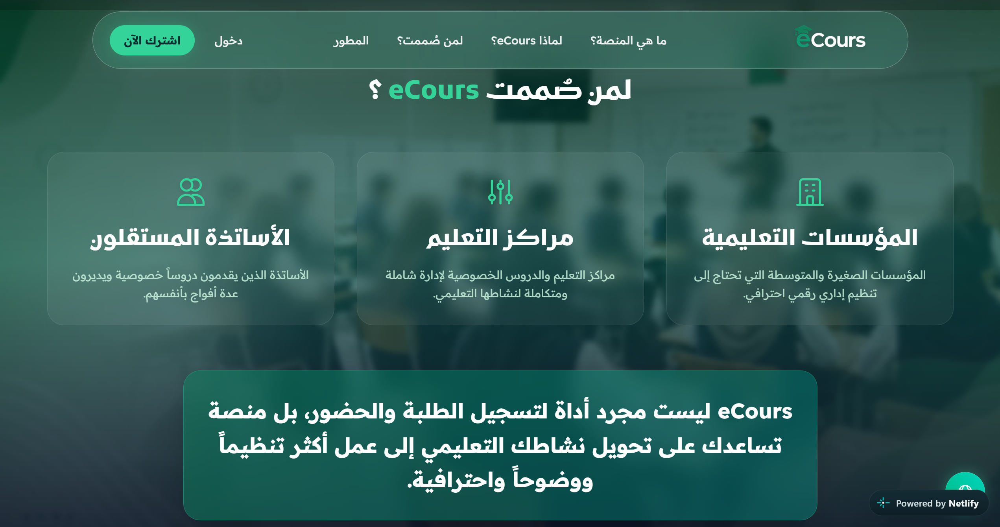
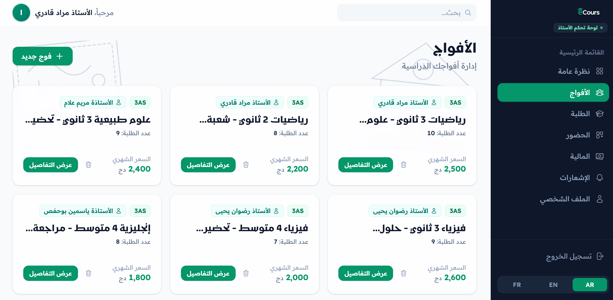
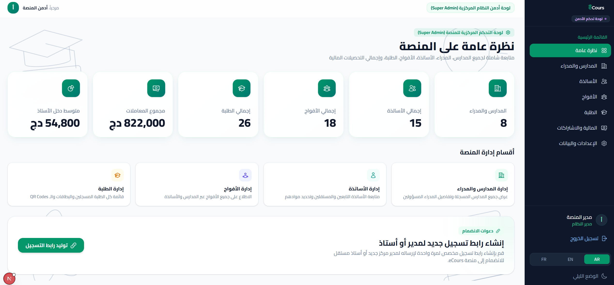
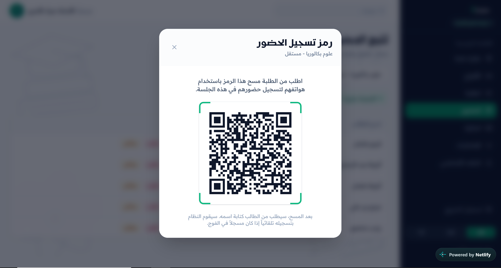
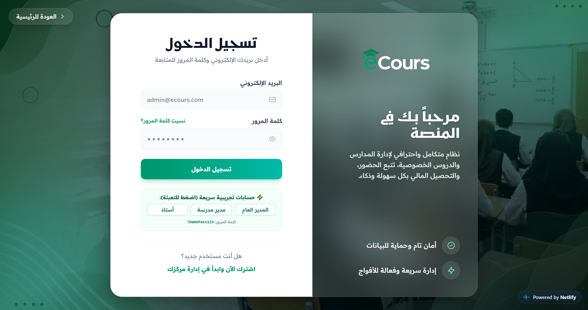

eCours
Digitizing private tutoring center operations into a real-time management SaaS for independent educators, school directors, and super admins.

Simplifying tutoring center administration
eCours is an educational management SaaS engineered to streamline administrative workflows for private tutoring centers and independent teachers. The platform bridges attendance logging, tuition tracking, capacity planning, and multi-school telemetry into an intuitive, multi-device dashboard experience.
Manual logs, financial leakage, & delay
Private tutoring centers and independent academies traditionally operate using physical notebooks, scattered messaging channels, and manual cash tracking. This leads to operational friction:
Slow attendance logging
Taking roll call manually eats up 10-15 minutes of limited class time.
Unclear payment status
Center managers struggle to track tuition dues, leading to uncollected fees.
Designed for three core roles
eCours is structured around distinct mental models across the educational hierarchy:
Foundational product assumptions
Rather than claiming formal user research, the product direction was established on these key operational assumptions:
Speed over complexity
Teachers will abandon a digital tool if logging attendance takes longer than 2 seconds per student.
High Arabic-RTL prevalence
Primary target users in the MENA region require an experience built natively for Arabic reading direction, not auto-translated text.
Varied device sizes
Teachers use smartphones on the go, while school directors work at desktop workstations with high data density.
Frictionless architecture & attendance flow
The product architecture prioritizes "Cognitive Calm" — organizing dense administrative data into clear visual containers and high-priority quick actions.
Emerald, Slate, & Dual Typography
The visual identity blends educational focus, trust, and modern fintech reliability.
Bilingual Font Scale
"Cairo" for geometric clarity in Arabic text. "Inter" for high-legibility numbers, timestamps, and Latin codes.
Emerald & Slate
Educational Emerald & Sage primary accents paired with Neutral Slate for high readability and structured framing.
Glassmorphic Cards
Soft glass panels with backdrop blur and subtle border highlights to define content hierarchy without visual noise.
Dark Mode First
Deep slate tones (avoiding pure black) paired with emerald glows for reduced eye strain during extended work hours.
The finished platform
The Landing Page Experience
A welcoming, highly-converting front door to the platform, highlighting core value propositions and platform benefits.

Core Features & Value Proposition
Presenting complex SaaS benefits through scannable, beautifully illustrated sections.



Super Admin Telemetry Dashboard
A bird's-eye view of platform health, featuring fluid KPI cards, semantic icons, and bold Arabic metric values.

School & Teacher Management
High-contrast data tables with alternating hover-lift interactions, allowing for instant search and intuitive roster management.


Student Registry & Quick Filters
A unified master student registry showcasing visual hierarchy, localized initials, and quick filtering controls.

Native RTL layout ergonomics
eCours was designed from the ground up for Right-to-Left (RTL) reading patterns rather than an English-first translation overlay. Navigation placement, card layout flows, and metric numbers follow native Arabic eye scanning habits.
Mobile-first for teachers, Desktop-first for admins
Different roles require different hardware environments. The UI adapts dynamically:
The system behind the screens
eCours is not a mockup. It is a working Next.js 16 application with React 19, TypeScript and Supabase: Server Components render role-scoped dashboards, Server Actions own every write, and TanStack Query keeps client lists in sync after each mutation.
Multi-tenant schema
Nine related tables — profiles, schools, teacher_profiles, groups, students, student_groups, sessions, attendance and payments — scoped by school and role.
Row-level security
Postgres RLS policies enforce superadmin, manager and teacher boundaries at the database layer, not just in the interface.
QR attendance
Every session issues a QR code; the teacher scans it with the device camera and attendance is written to Postgres in real time.
Arabic-first i18n
Every screen ships in Arabic and English with RTL layout, mirrored icons and locale-aware formatting from the first component.
Key takeaways
Multi-tenant UX
Designing interfaces that scale seamlessly across single independent tutors to multi-branch academy networks.
Arabic RTL precision
Mastering typographic baselines, number alignment, and layout mirroring for Arabic-first SaaS products.
Financial legibility
Structuring fee status, debt indicators, and revenue tables so key numbers can be scanned in seconds.